<title>Matching Rows Round 1</title>
<meta name="claude:viewport-fit-sides" content="cover">
<style>
/* Layout: one reading column of numbered findings, each a short statement, its pictures stacked full width, then the recommendation and the answer to give. */
:root{
  --bg:#f3f5f7; --panel:#ffffff; --ink:#14181d; --ink-2:#4a5560; --edge:#d6dce2; --accent:#0e7fa3; --ring:#c77700; --tag:#e9eef2;
  --f-body:"Inter Tight","Segoe UI",system-ui,-apple-system,sans-serif; --f-head:"Barlow Condensed","Arial Narrow","Segoe UI",sans-serif;
}
@media (prefers-color-scheme: dark){:root:not([data-theme="light"]){--bg:#0d1014;--panel:#161b21;--ink:#e8edf2;--ink-2:#9aa7b3;--edge:#2a323b;--accent:#4cc3e6;--ring:#ffb020;--tag:#1f262e;color-scheme:dark}}
:root[data-theme="dark"]{--bg:#0d1014;--panel:#161b21;--ink:#e8edf2;--ink-2:#9aa7b3;--edge:#2a323b;--accent:#4cc3e6;--ring:#ffb020;--tag:#1f262e;color-scheme:dark}
body{background:var(--bg);color:var(--ink);font:15px/1.55 var(--f-body);padding-left:max(16px,env(safe-area-inset-left,0px));padding-right:max(16px,env(safe-area-inset-right,0px));padding-block:20px 48px}
main{max-width:980px;margin:0 auto;display:flex;flex-direction:column;gap:28px}
h1{font:700 30px/1.1 var(--f-head);letter-spacing:.02em;text-transform:uppercase;margin:0;text-wrap:balance}
h2{font:700 22px/1.2 var(--f-head);letter-spacing:.02em;margin:0;text-wrap:balance;display:flex;gap:10px;align-items:baseline}
h2 .n{background:var(--ring);color:#000;border-radius:7px;padding:0 9px;font-size:18px}
p{margin:0;max-width:68ch}
.lead{color:var(--ink-2)}
section{background:var(--panel);border:1px solid var(--edge);border-radius:14px;padding:18px max(16px,2vw);display:flex;flex-direction:column;gap:14px;min-width:0}
figure{margin:0;display:flex;flex-direction:column;gap:6px;min-width:0}
figure img{width:100%;height:auto;border-radius:8px;border:1px solid var(--edge);cursor:zoom-in;display:block}
figcaption{font-size:13px;color:var(--ink-2)}
.tag{display:inline-block;font:600 11px/1.6 var(--f-body);letter-spacing:.06em;text-transform:uppercase;background:var(--tag);border-radius:5px;padding:0 6px;margin-right:6px;color:var(--ink)}
.tag.drawn{background:var(--accent);color:var(--bg)}
.pair{display:grid;grid-template-columns:repeat(auto-fit,minmax(min(100%,300px),1fr));gap:12px}
.phones{display:grid;grid-template-columns:repeat(auto-fit,minmax(min(100%,180px),1fr));gap:12px}
.thumbs{display:grid;grid-template-columns:repeat(auto-fit,minmax(min(100%,220px),1fr));gap:10px}
.rec{border-left:3px solid var(--accent);padding:4px 0 4px 12px;display:flex;flex-direction:column;gap:6px}
.rec b{color:var(--accent)}
.ask{font-weight:600}
ul{margin:0;padding-left:20px;display:flex;flex-direction:column;gap:4px}
.zoom{position:fixed;inset:0;background:rgba(0,0,0,.88);display:flex;align-items:center;justify-content:center;z-index:20;padding:env(safe-area-inset-top,0px) max(8px,env(safe-area-inset-right,0px)) env(safe-area-inset-bottom,0px) max(8px,env(safe-area-inset-left,0px));overflow:auto;cursor:zoom-out}
.zoom img{max-width:none;width:min(1600px,200vw);height:auto}
@media (max-width:600px){.zoom img{width:220vw}}
</style>

<main>
  <header style="display:flex;flex-direction:column;gap:10px">
    <h1>Matching rows — round 1</h1>
    <p class="lead">I pictured the top of every page at your PC's size and your iPhone's: Edit Schedule, View-only Sched, the Scheduler Board, Inputs (calendar and list), SANS, Medical, Quals, Logic, Leave War, Tracker, Help and Admin. Twelve things are drawn differently where they should match. These are the four that matter most; the other eight come in the next rounds. The orange ring marks the place. <span class="tag drawn">Drawn</span> pictures are the proposal drawn on the real app; nothing is built yet. Tap any picture to enlarge it.</p>
    <p class="ask">Answer by number, for example: "1 yes, 2 yes, 3 yes, 4 yes".</p>
  </header>

  <section>
    <h2><span class="n">1</span>Inputs and SANS top rows</h2>
    <p>Your find. On a desktop, Inputs has its tabs, Calendar | List, the month and Today on one row (ring 1). SANS has its tabs alone on a row (ring 1) and the month on a second row (ring 2). Its month name is also bigger and heavier, and its buttons are 36 tall where Inputs' are 44. On a phone the rows already match; only the month's letters differ.</p>
    <div class="pair">
      <figure>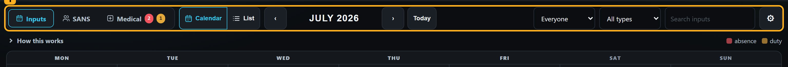<figcaption><span class="tag">Today</span>Inputs</figcaption></figure>
      <figure>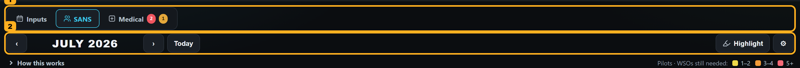<figcaption><span class="tag">Today</span>SANS — two rows</figcaption></figure>
    </div>
    <div class="pair">
      <figure>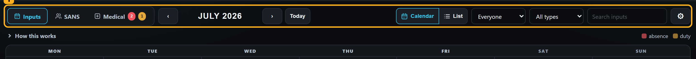<figcaption><span class="tag drawn">Drawn</span>Inputs — month after the tabs; Calendar | List at the right end</figcaption></figure>
      <figure>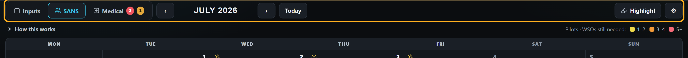<figcaption><span class="tag drawn">Drawn</span>SANS — one row, the month in the same place and style</figcaption></figure>
    </div>
    <figure>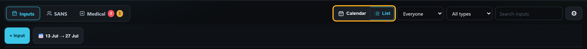<figcaption><span class="tag drawn">Drawn</span>Inputs on the List: the Calendar | List switch stays where it was on the calendar (measured, the same spot to the pixel), so it never moves under your finger</figcaption></figure>
    <div class="phones">
      <figure>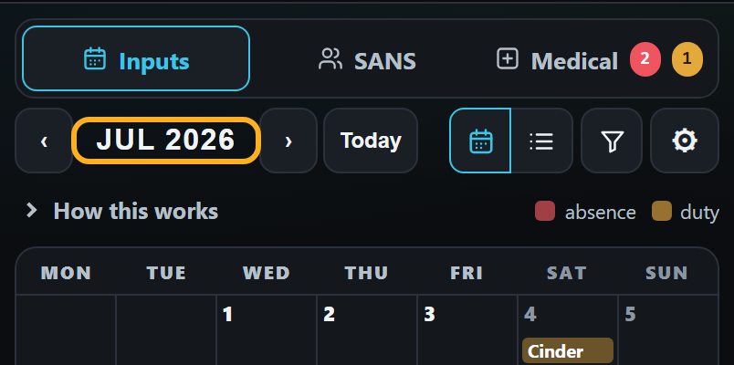<figcaption><span class="tag">Today</span>Phone, Inputs</figcaption></figure>
      <figure>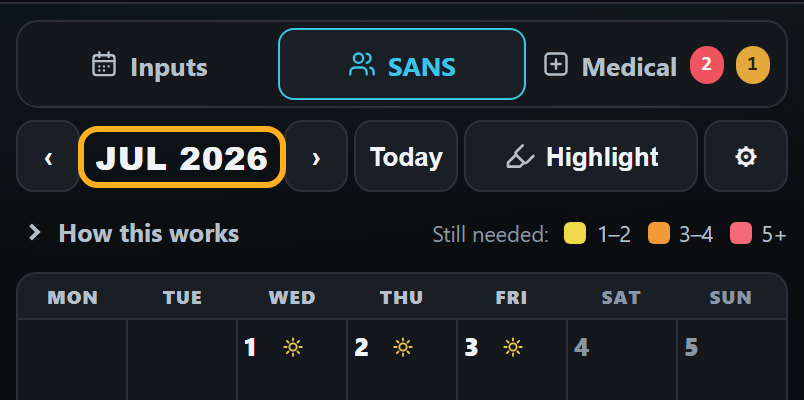<figcaption><span class="tag">Today</span>Phone, SANS — heavier letters</figcaption></figure>
      <figure>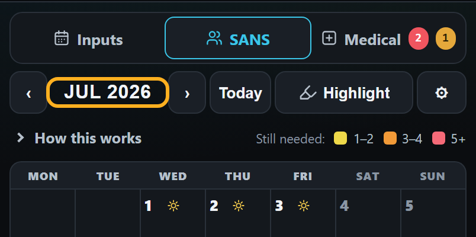<figcaption><span class="tag drawn">Drawn</span>Phone, SANS — the Inputs letters</figcaption></figure>
    </div>
    <div class="rec">
      <p><b>Recommended:</b> one row on both calendars, as drawn. The arrows, month and Today follow the tabs in the same place on both pages. Inputs' Calendar | List moves to the right end beside the filters, as it already sits on the phone. The month name takes the Inputs style on both. The buttons are drawn 36 tall on both, as tall as the tabs; the area a finger can press stays its full size.</p>
      <p>That last part makes the Inputs buttons look smaller (44 to 36), and you ruled that button sizes change only on your word. If you'd rather keep 44, say "1 yes, keep 44", and SANS's buttons go up to 44 instead.</p>
    </div>
  </section>

  <section>
    <h2><span class="n">2</span>Edit Schedule's top bar takes two lines on your PC</h2>
    <p>At your PC's width, Edit Schedule's top bar breaks onto a second line; every other page stays on one line. So the whole page drops down about 46px every time you open Edit Schedule. The cause is Edit Schedule's extra button, the changes clock. Below 1500 wide the app already shows Undo and Redo as arrows only and the sync pill as its dot; your screen is 1536 wide, just above that.</p>
    <figure>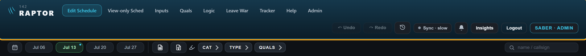<figcaption><span class="tag">Today</span>Edit Schedule — two lines</figcaption></figure>
    <figure>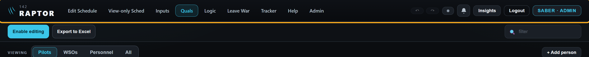<figcaption><span class="tag">Today</span>Quals — one line, as every other page</figcaption></figure>
    <figure>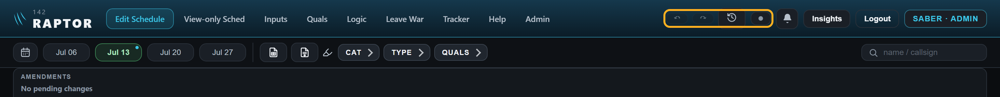<figcaption><span class="tag drawn">Drawn</span>Edit Schedule — one line</figcaption></figure>
    <div class="rec">
      <p><b>Recommended:</b> use that compact look up to 1600 wide, on every page, so Undo and Redo look the same everywhere: their arrows only, with "Undo" and "Redo" shown when you hover. The sync pill shows its dot alone. Measured as drawn: Edit Schedule's bar fits on one line at 1536.</p>
    </div>
  </section>

  <section>
    <h2><span class="n">3</span>Search boxes drawn four ways</h2>
    <p>The same kind of box has four looks. Edit Schedule's week has a grey line magnifier. The Scheduler Board, Quals and Logic have a coloured emoji magnifier, which also shows as an emoji on your iPhone. Admin and Inputs have no magnifier. The Tracker has no magnifier and a separate ✕ button beside the box. The board and the week search for the same thing, yet look different.</p>
    <div class="thumbs">
      <figure>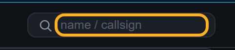<figcaption>Edit Schedule week — grey line magnifier</figcaption></figure>
      <figure>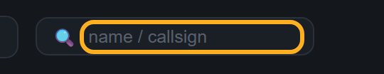<figcaption>Scheduler Board — emoji</figcaption></figure>
      <figure>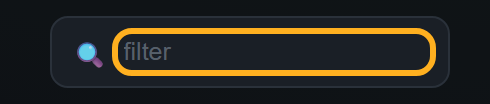<figcaption>Quals — emoji</figcaption></figure>
      <figure>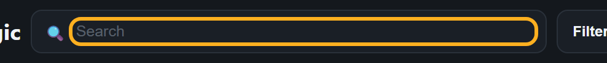<figcaption>Logic — emoji</figcaption></figure>
      <figure>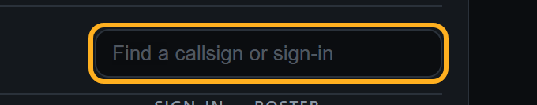<figcaption>Admin — none</figcaption></figure>
      <figure>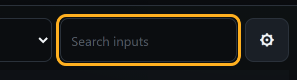<figcaption>Inputs — none</figcaption></figure>
      <figure>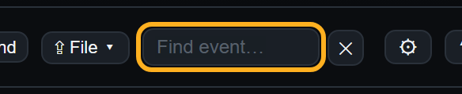<figcaption>Tracker — none, separate ✕</figcaption></figure>
    </div>
    <div class="rec">
      <p><b>Recommended:</b> one search box everywhere, the Edit Schedule week's: the grey line magnifier inside on the left, the box as tall as the buttons beside it. Each box keeps its own words, because each finds something different (a callsign, a rule, an event).</p>
    </div>
  </section>

  <section>
    <h2><span class="n">4</span>Edit buttons on Quals and Logic work opposite ways</h2>
    <p>Both pages have a button to start editing and one to finish. Quals: "Enable editing" in bright blue, then "Save changes" in plain grey. Logic: "✎ Edit" in plain grey, then "Done" in bright blue. Same job, opposite colours, different words. Quals keeps each change as you make it; its "Save changes" only ends editing.</p>
    <div class="pair">
      <figure>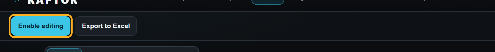<figcaption><span class="tag">Today</span>Quals — to start</figcaption></figure>
      <figure>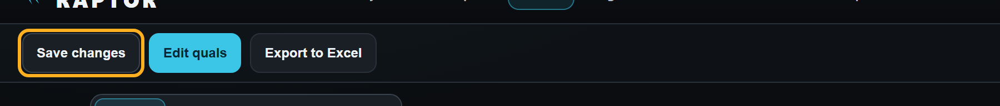<figcaption><span class="tag">Today</span>Quals — while editing</figcaption></figure>
      <figure>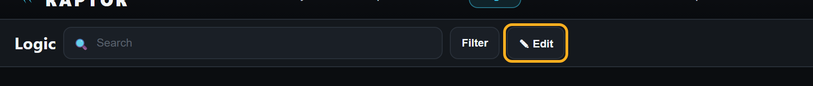<figcaption><span class="tag">Today</span>Logic — to start</figcaption></figure>
      <figure>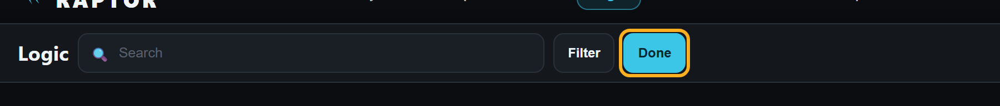<figcaption><span class="tag">Today</span>Logic — while editing</figcaption></figure>
    </div>
    <div class="rec">
      <p><b>Recommended:</b> Logic's pair on both pages: "Edit" in plain grey to start, "Done" in bright blue while editing. It is the newer design, approved on 15 Oct. It is also fewer words, and the blue marks the one button you need to finish.</p>
    </div>
  </section>

  <p class="lead">Next, after your answers: round 2 and round 3, eight more, each with its pictures.</p>
</main>

<script>
document.addEventListener('click', e => {
  const z = document.querySelector('.zoom')
  if (z) { z.remove(); return }
  const img = e.target.closest('figure img'); if (!img) return
  const d = document.createElement('div'); d.className = 'zoom'
  const big = document.createElement('img'); big.src = img.src; big.alt = img.alt
  d.appendChild(big); document.body.appendChild(d)
})
document.addEventListener('keydown', e => { if (e.key === 'Escape') document.querySelector('.zoom')?.remove() })
</script>
